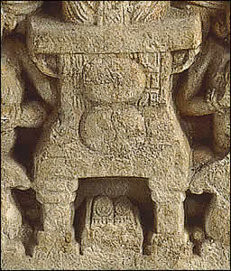

Why doesn't the Buddha appear as a man?The Buddha was against being treated like a god. For this reason, he was not shown in a human form in sculpture. 
In early Buddhist sculpture he is represented by symbols such as footprints and an empty throne. Over time, however, the Buddha began to be shown as a god-like man. |